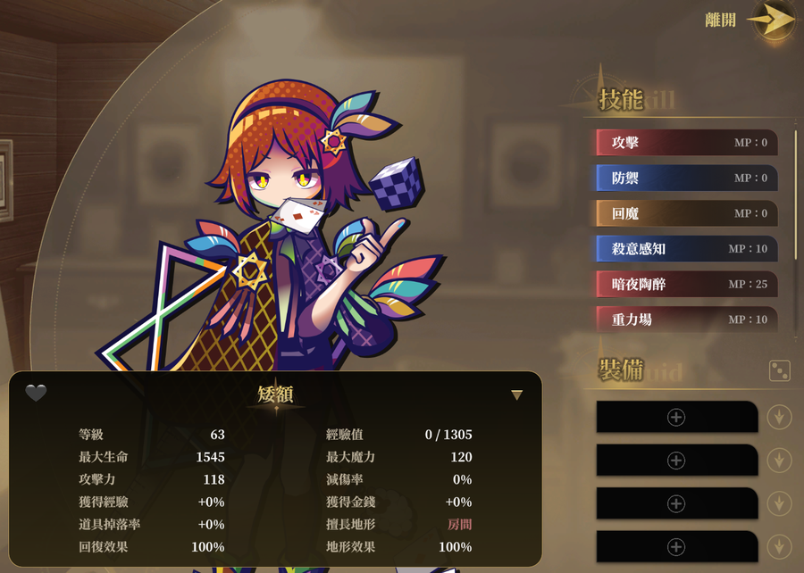

演出與發放內容
寫進資料表只代表「這東西存在」。玩家還沒有它。這章講怎麼真的發給玩家。
這是最容易漏掉的一步
你在
道具有價格欄位可以自動上架，角色和關卡沒有。 唯一的發放途徑是演出指令。
Data/Role/ 加了一個角色，資料完全正確 ——
但玩家永遠不會拿到他。道具有價格欄位可以自動上架，角色和關卡沒有。 唯一的發放途徑是演出指令。
演出是什麼
演出（Show）是一串遊戲指令。可以是劇情對話，也可以是純粹的資料操作。
放在 Data/Show/，一個演出一個檔。
{
"Name": "MyMod",
"Tag": "AutoRun",
"Shows": [
"<AddRole>新角色"
]
}
演出只有四個欄位
ID / Name / Tag / Shows。
沒有說明欄位，寫了會被跳過。
AutoRun：模組唯一能主動做事的鉤子
Tag 填 AutoRun，這個演出就會在
開新遊戲 / 讀取存檔後自動播放。
Data/Show/AutoRun.json
{
"Name": "MyMod",
"Tag": "AutoRun",
"Shows": [
"<AddRole>新角色",
"<AddItem>超強藥水,1"
]
}
AutoRun 每次都會跑，不是只跑一次
每次「開始新遊戲」和「讀取存檔」都會執行一遍。
這通常無害 ——
這通常無害 ——
<AddRole> / <AddItem>
對已經持有的對象會直接跳過，不會重複給、也不會把等級打回 1。
真的只想跑一次，自己用旗標包起來：
{
"Name": "MyMod",
"Tag": "AutoRun",
"Shows": [
"<if>{我的模組已初始化}==0",
"<AddRole>新角色",
"<Var>我的模組已初始化,=,1",
"<endif>"
]
}Name 直接用你的模組名稱
Name 是合併用的 key，兩個模組的 AutoRun 同名時後面的會蓋掉前面的
（不會有警告）。用模組名當 Name 就不會撞到別人。
Tag 是「包含」判定，不是「等於」
"Tag": "AutoRun,劇情" 也算 AutoRun。大小寫不敏感，寫
autorun 也認得。
發放角色
"<AddRole>新角色參數是角色資料表的 Name（不是 Name_I2）。
角色要出現在「回想之境 > 船員」還需要兩個條件
ID大於 0Name不是空的
<AddRole> 執行了也看不到。

殺意感知 / 暗夜陶醉 /
重力場 都是模組自己加的）。這一切的前提是 AutoRun 演出裡那一行
<AddRole>矮額
—— 沒有它，資料再完整玩家也拿不到。
發放關卡
兩行都不能省。
"<AddStageGroup>模組",
"<AddStage>模組試煉 深淵"
少了
遊戲內建了一個叫「模組」的群組可以直接用。
<AddStageGroup> 關卡就看不到
關卡必須掛在一個群組底下。沒有群組，玩家在關卡選單裡找不到它。遊戲內建了一個叫「模組」的群組可以直接用。
重複執行是安全的
已經持有的群組和關卡不會被加第二次。
發放道具
"<AddItem>超強藥水,1"
道具通常不需要 AutoRun
道具有
SellPrice 這類欄位，填了就會出現在商店裡讓玩家買。
只有「想直接送給玩家」時才需要 <AddItem>。
AutoRun 要注意的一件事
存檔停在劇情中間時，AutoRun 會跟那段劇情同時進行
讀檔時如果剛好續播一段劇情，AutoRun 會跟它搶畫面。
建議 AutoRun 只放純資料指令 ——
想寫對話和節奏，放到關卡的勝利演出裡更自然（見下一章）。
建議 AutoRun 只放純資料指令 ——
<AddRole> / <AddItem> /
<AddStage> / <Var> 這類。想寫對話和節奏，放到關卡的勝利演出裡更自然（見下一章）。
多個模組的 AutoRun 是串行的
一個播完才播下一個，順序 = 模組管理頁的排序（由上而下）。
所以你在 AutoRun 裡寫
所以你在 AutoRun 裡寫
<Wait> 安排節奏時，
不會被別的模組插話。
命名慣例：補既有的演出位
遊戲有些地方是用固定名稱去找演出的。把 Name
取成那個名字，就會在對應時機被叫到 —— 不需要 Tag。
主畫面角色對話
玩家在主畫面點角色立繪時播放。名稱規則：
主畫面角色對話_<角色的 Name>例如角色的 Name 是「新角色」：
Data/Show/RoomTalk.json
{
"Name": "主畫面角色對話_新角色",
"Shows": [
"<Var>主畫面對話值,+,1",
"<if>{主畫面對話值}>3",
"<Var>主畫面對話值,=,1",
"<endif>",
"<if>{主畫面對話值}==1",
"<MateImage>NewHero",
"<MateTalk>{目前主畫面角色名稱}：安安",
"<elseif>{主畫面對話值}==2",
"<MateTalk>{目前主畫面角色名稱}：又是你",
"<elseif>",
"<MateTalk>{目前主畫面角色名稱}：沒事別亂點",
"<endif>"
]
}
沒補這個演出不會報錯
模組角色在主畫面只會站著不說話。想讓他有反應就要補。
用的是角色資料表的
用的是角色資料表的
Name，不是翻譯後的顯示名稱。
常用指令速查
| 指令 | 作用 |
|---|---|
<AddRole>角色Name | 給玩家一個角色 |
<AddItem>道具Name,數量 | 給玩家道具 |
<AddStageGroup>群組名 | 解鎖關卡群組 |
<AddStage>關卡Name | 解鎖關卡 |
<Var>變數,=,值 | 設定變數（= / + / -） |
<if>條件 … <endif> | 條件判斷，中間可用 <elseif> |
<Talk>內容 | 對話。不帶內容 = 關掉對話框 |
<MateTalk>內容 | 主畫面對話 |
<Wait>秒數 | 等待 |
<BG>背景名,秒數,顏色 | 切背景。<BG>,1 = 淡出 |
<Image>槽位,角色,表情,服裝 | 立繪。不帶參數 = 清掉全部 |
<MateImage>角色,表情,服裝 | 主畫面立繪（沒有槽位參數） |
<BGM>音樂名 | 切音樂 |
<Sfx>音效名 | 播音效 |
完整的指令清單在演出編輯器裡
指令很多，而且有不少參數細節。用演出編輯器
寫演出可以邊選邊看說明，不用背。
對話的寫法慣例
說話者寫成「名字：內容」：
"<Talk>新角色：早安。"
名字對得上角色資料時會自動上色並打聚光燈
用的是角色資料表的
Name。對不上就只是普通文字，不會報錯。
劇情段的開頭與結尾
照抄遊戲本體的寫法：
"<BG>MyBG,0,#00000000", 背景先設好、全透明
"<BG>MyBG,1,#FFFFFF", 1 秒淡入
"<Talk>某人：開場對白。",
"<Talk>", 關掉對話框
"<Image>", 清掉立繪
"<BG>,1" 背景淡出檢查清單
角色 / 關卡加了但玩家看不到：
- 有寫 AutoRun 演出嗎？（最常見原因）
Tag有含AutoRun嗎？<AddRole>的參數是資料表的Name嗎？（不是Name_I2）- 資料的
ID大於 0 嗎？ - 關卡有寫
<AddStageGroup>嗎？ - 回標題重新「開始新遊戲」或「讀取存檔」了嗎？